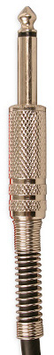
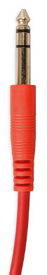
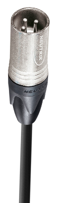

Audio cables
Type and Usage of Important Studio Cables

Press the "Page Down" key to continue...
Hello there!
My name is + David Rubert from Castellón de la Plana, Spain. This lesson covers week 1 of the Coursera course Introduction to Music production. I have choosen to present the Type and usage of important studio cables. I hope you find it interesting.
Audio cables
They are a fundamental part of the music production process. Allow us to interconnect the microphones, instruments, or any other audio source to our audio interface, amplifier, active monitors, etc.
We can find two basic types of audio cables:
Analog and Digital.
Analog cables (XLR and TRS)
Digital cable (Toslink)
Analog cables
These are a fundamental type of cables, allow us to connect input sources like microphones or instruments to our interface or amplifier.
There are three main types of analog cables, identified by their connectors:
- TS (Mono/Unbalanced cable).
- TRS (Stereo/Balanced cable).
- XLR (Microphone cable).
Example of TS cable (guitar/bass cable)
Example of TRS cable (balanced cable)
Example of XLR cable (microphone cable)
TS cable
TS (tip-sleeve) cable has a cylindrical shape connector with 2 contacts, and it's a single conductor cable. The tip carries the main signal and the sleeve acts as an shield.
Mainly used for instruments connection, it's affected by noise. We must use it as shorter as possible.
TRS cable
TRS (tip-ring-sleeve) cable is a two conductor cable with a shield. Very similar physically with the TS cable.
Can be used as an stereo cable (carrying two separate signals), or as a balanced configuration, which only carries one audio signal but cancels noise.
XLR cable
This type of cable connector, like the TRS one, has 3 pins on his end, but its connector is designed specifically for microphones, with a very useful locking system.
Like the TRS cables, these are the recommended cables to connect long-distance separated devices.
Example of a TRS-XLR cable (different connectors on the same cable)
Connecting balanced with unbalanced cables
It's possible to connect an unbalanced cable with a balanced one, using a middle device called direct box.
For what would we want this for? Easy, it would allow us to make a long distance connection of an unbalanced connected deviced .
Front of a direct box (unbalanced connector)
Rear of a direct box (XLR connectors)
Other analog connectors
Eight inch stero connector. It's the same connector as its big brother one, the TRS that we saw before.
RCA. It's an unbalanced cable used to connect home consumer devices. If you connect one of this to your pro gear, remember that the consumer devices work at -10dBv.
Eight inch connector
RCA connector
RCA to eight-inch cable
Digital connectors
Digital connectors allow us to interconnect digital devices, passing digital signals between them. We can find these types of digital connectors:
S/PDIF. Trasmits the digital signal over a coaxial cable or a optical fiber cable (TosLINK).
MIDI. Trasmits digital data (MIDI DATA) over a 5 contacts cable (DIN connector).
S/PDIF coaxial cable
TOSLINK optical cable
MIDI cable
Thanks for watching!
I'm not a professional of audio but a learning enthusiat so I expect that the presentation has been pleasant to you. Thanks for watching, evaluating and critiquing it. See you later on the forums!.